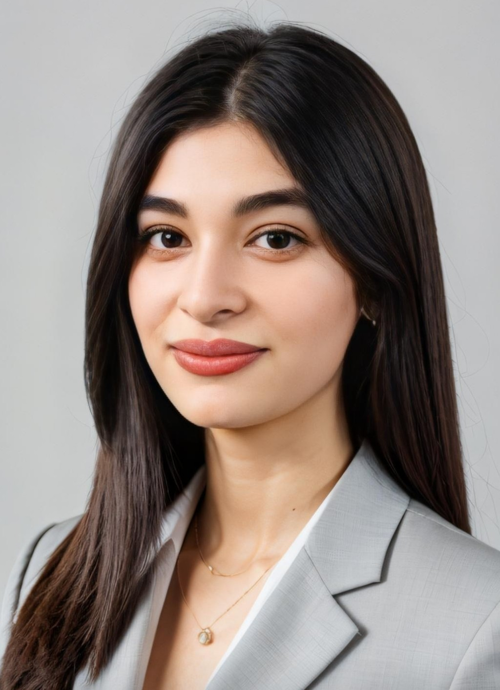

<!DOCTYPE html>
<html lang="En">
    <head>
        <meta charset="UTF-8">
        <meta name="viewport" content="width=device-width, initial-scale=1.0">
        <title>My Resume</title>
    </head>
</html>
<h1>Samira Mammedova</h1> 
<h3>-02.04.2002-</h3>

<h2>Summary</h2>
<p>"I am open to new technologies and knowledge, attentive to details, love to research, and am enthusiastic about working with a team."</p>
<hr />
<h2>Education</h2>
<p>Bachelor of Finance - Azerbaijan State University of Economics(2019-2024)</p>
<p>GPA-93</p>
<hr />
<h2>Work Experience</h2>
<ul>
    <h3><li>Credit Risk Analyst (Intern) - Kapital Bank </h3>
        <p>23.05.2025 - Present</p>
        <ul>
            <li>Optimized risk profiles by analyzing risk criteria for various credit products.</li>
            <li>Performed data pre-cleaning, visualization, and analysis using SQL, Excel, and Tableau.</li>
            <li>Worked with the Experian software.</li>
            <li>Conducted risk and profitability analyses on real client portfolios.</li>
        </ul>
    </li>
    <h3>
        <li>Digital Literacy (Intern) - International Bank of Azerbaijan</h3>
            <p>08.07.2024 - 08.01.2025</p>
            <ul>
                <li>Communicating with customers and providing solutions tailored to their needs.</li>
                <li>Improving the accuracy of management processes by organizing documents and keeping records.</li>
                <li>Contributing to the fast and accurate execution of processes by providing support in payment operations.</li>
                <li>Making banking services more efficient by simplifying customer work through applications.</li>
                <li>Timely and accurate performance of tasks assigned by management.</li>
                <li>Quick finding of customer information through the system and providing necessary support.</li>
            </ul>
        </li>
        <h3>
            <li>Audit (Intern) - The State Customs Committee</li>
        </h3>
        <p>15.10.2024 - 08.01.2025</p>
        <ul>
            <li>Extensive experience in the process of analysis and verification of customs documents.</li>
            <li>To increase the level of awareness by conducting research on various products and provide accurate information in decision making.</li>
            <li>Improving the efficiency of processes by timely detection and elimination of inconsistencies.</li>
        </ul>
    <hr />
</ul>
<h2>Hard Skill</h2>
<ul>
    <li>Oracle SQL</li>
    <li>Python</li>
    <li>Tableau</li>
    <li>Experian</li>
    <li>HTML</li>
    <li>MS Office</li>
</ul>
<hr />
<h2>Soft Skill</h2>
<ul>
    <li>Communicate</li>
    <li>Time management</li>
    <li>Teamwork</li>
    <li>Adaptability</li>
    <li>Problem-sloving</li>
</ul>
<hr />
<h2>Certificates</h2>
<ul>
    <li>"Mühasibat uçotu audit C1"(INNAB courses)</li>
    <li>"Audit"(The State Customs Committee)</li>
    <li>"Rəqəmsal Maarifləndirmə"(ABB)</li>
    <li>"Emosional Intellekt"(ABB)</li>
</ul>
<hr />
<h2>Interests</h2>
<ul>
    <li>Reading books</li>
    <li>Learning New Programming Languages</li>
    <li>Business</li>
</ul>
<hr />
<h2>Languages</h2>
<ul>
    <li>Azerbaijani - Native</li>
    <li>Turkish - Native</li>
    <li>English - B1</li>
    <li>Korean - A2</li>
</ul>